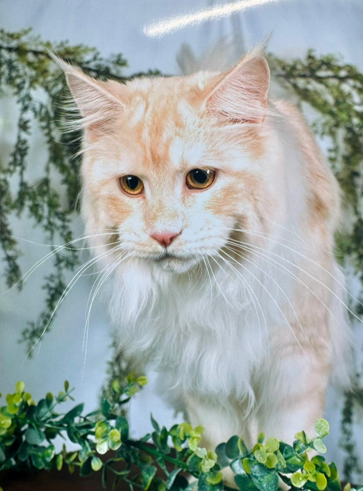
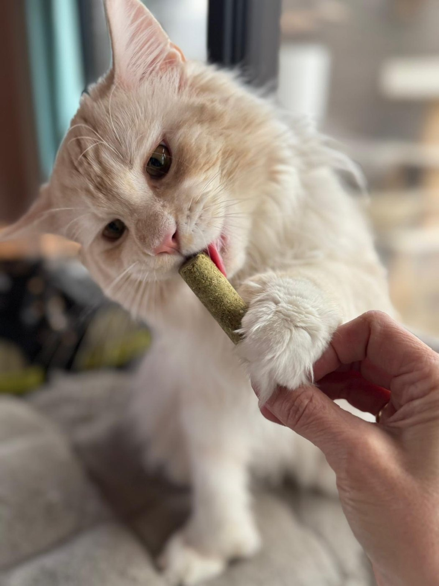
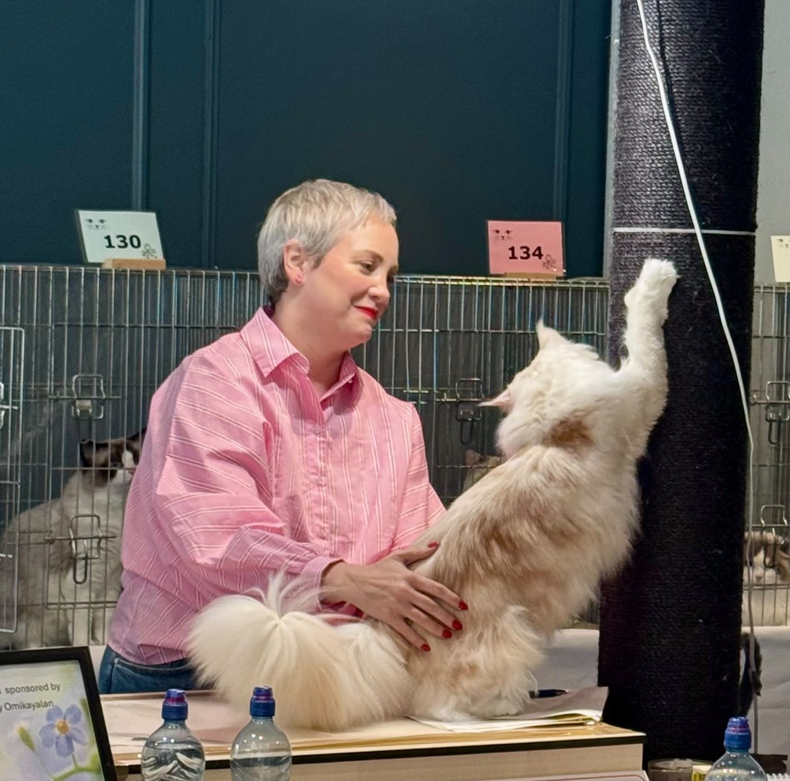
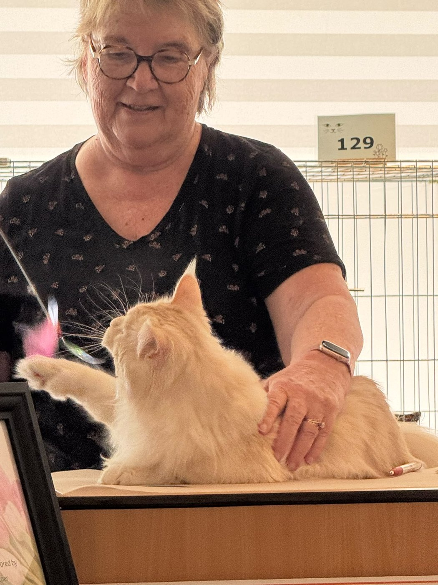
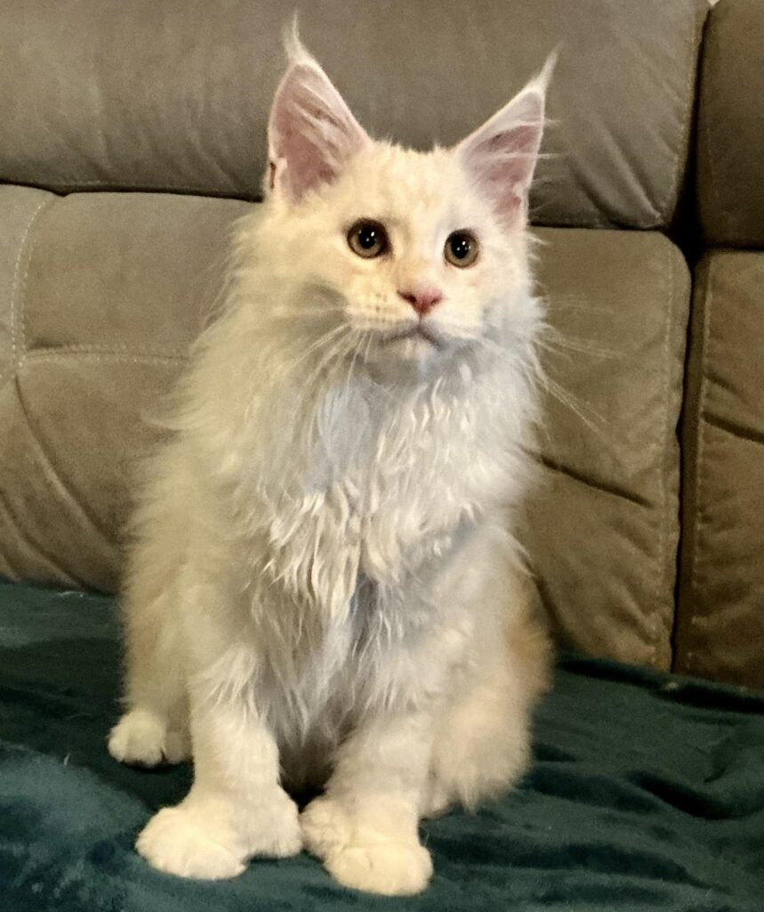

Ixí is our gentle and incredibly talkative boy. With his sweet chirping, he accompanies almost every step he takes, whether he is heading to the kitchen or to his litter box. He is an ultimate cuddler — whenever he gets a chance, he settles on us regardless of the position we are resting in, and starts purring loudly. A fascinating feature of his are his large polydactyl paws, which he occasionally uses to gently pull my hand closer when he craves some petting.
Alongside his wonderful temperament, he boasts a silky, soft coat that requires regular grooming. Ixí is also a natural-born showman who truly blossoms at cat shows and thoroughly enjoys the admiration of the crowd. He has a very well-balanced personality; he is never startled by noise or crowds, and since he was a kitten, he has fearlessly assisted with vacuuming or blow-drying.



